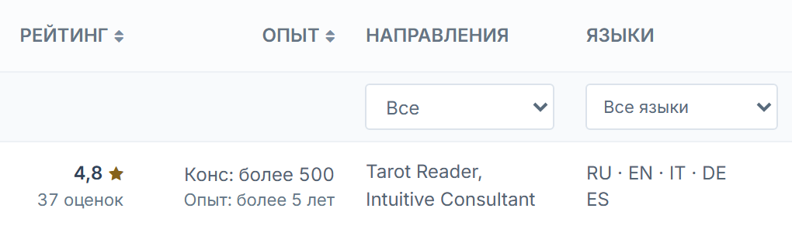
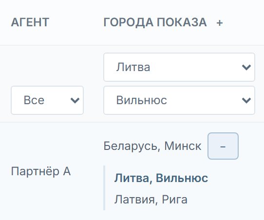

Разделить пользователей на клиентов и экспертов
Редакция 4 · 10 ноября 2026
В меню админки нужны два отдельных пункта. «Клиенты» открывает список аккаунтов, «Эксперты» — список экспертных анкет. Состав столбцов, порядок и вид элементов берём из приложенных макетов. Действующая админка и поля профиля служат источниками данных для реализации.
Сейчас оба типа записей находятся в общем списке «Пользователи». Закрепление и города эксперта проверяются отдельно в разделе «Партнёры → Анкеты».
Исходная страница · 09.11.2026 · Все материалы
2. Эксперты
/ru/admin/expert/index
Добавить отдельный пункт «Эксперты». Новая анкета, созданная кнопкой «Создать», сразу появляется в этом списке. Назначить агента можно после создания.
Макет «Эксперты» · Строка Марины Север · Города Марины Север при фильтре по Вильнюсу · Строка Софии Луны с кнопкой «Назначить»

Марина Север, ID 512. Рейтинг, опыт, два направления и пять языков.
Та же строка. Основной город Минск. После выбора Вильнюса и раскрытия списка совпавший город выделен.Поля и источники
Партнёры и закрепления · Отзывы · Настройки рейтинга · Направления, поле №17 · Темы обращений, поле №18 · Консультации, поле №19 · Стаж, поле №20 · Языки, поле №21
3. Общие правила и приёмка
Состав списков
Аккаунт клиента и экспертная анкета принадлежат разным спискам. Рабочая учётная запись партнёра остаётся в «Партнёрах». Отсутствие агента, блокировка или скрытие в каталоге не меняют тип экспертной анкеты. До переключения сверить тип и итоговый список по ID каждой существующей записи. Если текущая схема хранит только закрепление, нужен отдельный признак экспертной анкеты, который сохраняется уже при создании. Неоднозначные существующие записи сверить до переноса.
Страны и города
После выбора страны появляется фильтр города. Он содержит города этой страны, в названиях страна не повторяется. При смене страны неподходящий город сбрасывается. Для экспертов совпадение по дополнительному городу видно даже в свёрнутой строке. В раскрытой строке совпадение выделено. Общий плюс в заголовке работает и после перехода на другую страницу.
Фильтры и список
Фильтры применяются вместе. Сортировка и фильтры работают по всей выборке до пагинации. При равных значениях использовать ID как второй ключ. Записи без рейтинга, количества консультаций, даты входа или остатка показывать в конце соответствующей сортировки. Размер страницы 10, 20, 50 или 100, по умолчанию 20. Фильтр, сортировка и размер страницы возвращают к первой странице. Сброс очищает фильтры и восстанавливает начальную сортировку. При пустой выдаче показать сообщение. Смена страницы или условий снимает выбор строк. Массовая команда в эту задачу не входит.
Действия и права
Администратор и другие разрешённые роли видят только доступные списки и команды. Сотруднику без права изменения показывается состояние верификации и блокировки текстом. Операции требуют штатного подтверждения. После успеха строка обновляется. При отмене или ошибке остаются прежние данные. При неизвестном исходе сначала прочитать текущее состояние с сервера. Повторное подтверждение верификации из устаревшей строки не снимает уже установленный значок. Прямые переходы и действия проверяют права и адресата на сервере. При возврате из карточки сохраняются фильтры, сортировка, размер и страница.
Вёрстка
Сохранить действующие шапку, меню и общий стиль админки. Столбцы заполняют рабочую ширину. При нехватке места таблица прокручивается внутри своей области. До 767 px строки превращаются в карточки, доступны кнопка фильтров, сортировка и выбор страницы. В списках нет вкладок. Для другой локали используется её обычный префикс адреса.
Как проверить на тестовом сайте
Макеты показывают интерфейс на вымышленных записях. Сохранение на сервере и права ролей проверяются после внедрения.